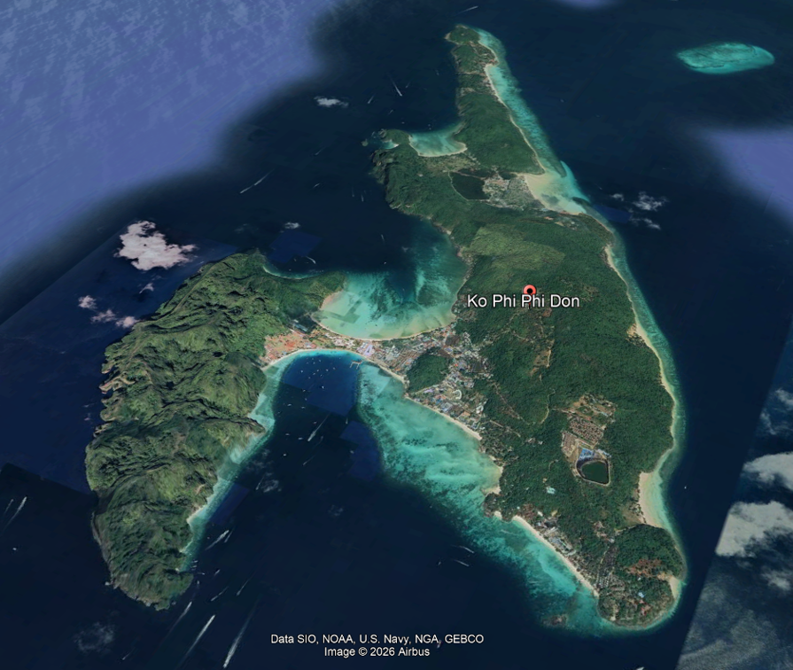
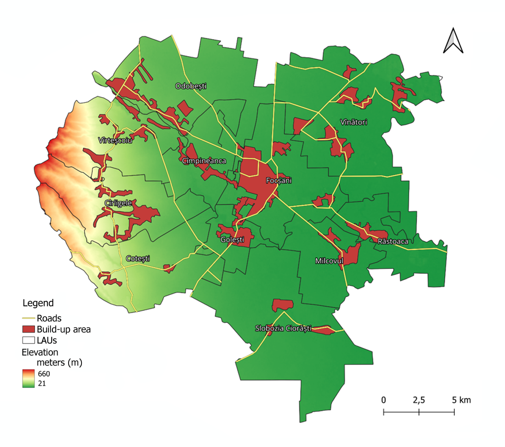

Multi-temporal shoreline analysis using Google Earth Engine, Landsat, Sentinel-2, and GIS techniques.
Read More
Spatio-temporal analysis of urban expansion and green infrastructure change using Google Earth Engine, Landsat, Sentinel-2, GIS, and remote sensing indices (NDVI, NDBI, LST, PD).
Read More